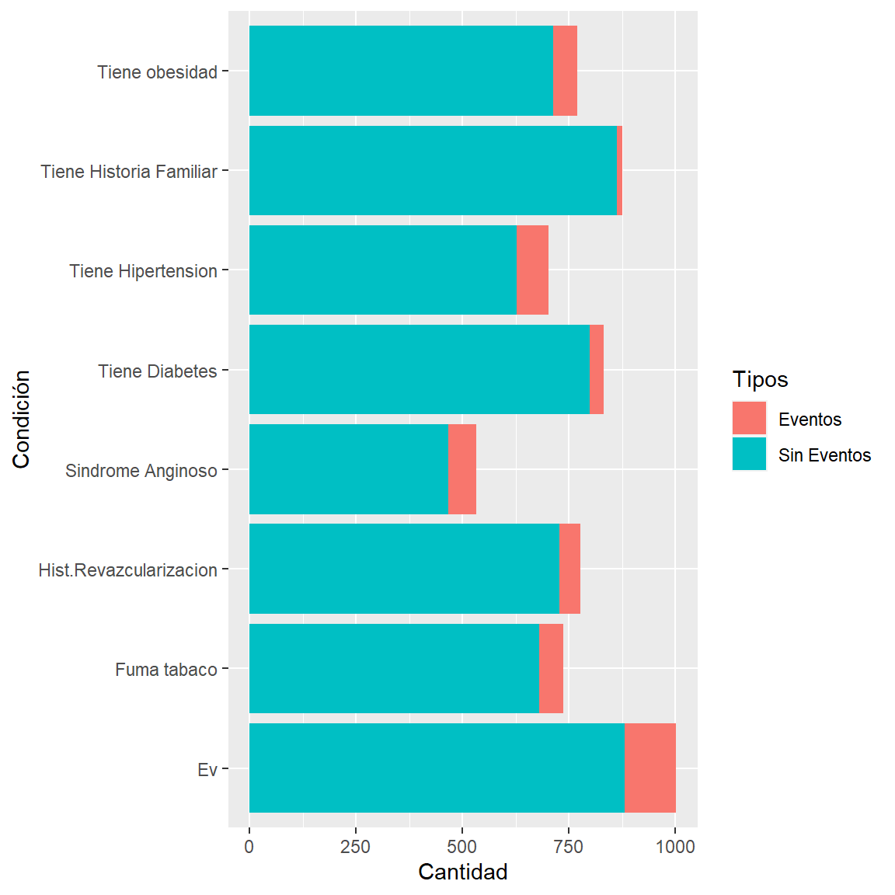

Introducción
En la siguiente presentación, se analizará tanto gráficamente como analíticamente ciertos datos de personas con riesgo a padecer eventos cardiovasculares. Estos datos fueron provistos por el Hospital Austral, en base a 1002 casos en los cuales el paciente se presentó en el hospital con síntomas asociados a un evento cardiovascular, pero que no necesariamente haya, posteriormente, sufrido un evento. Con estos datos se busca poder mostrar que características son determinantes para saber si el paciente debe ser internado de urgencia o no.
Visualización De Los Datos
A continuación, se mostrarán los distintos tipos de datos que se eligieron para el análisis.

Análisis de Pacientes por Presencia de Eventos
A continuación, vamos a observar el porcentaje de personas que padecen eventos y cómo la edad influye sobre este porcentaje.
Eventos Cardíacos Totales
Este gráfico muestra la cantidad de personas que padecieron eventos cardiovasculares y el porcentaje de personas que no han padecido eventos.

PacientesConEventos PacientesSinEventos
[1,] 121 881Eventos Analizados Por Edad
En este gráfico se representan las distintas edades de las personas que sufrieron algún evento.
A partir de este gráfico se observa que los pacientes menores a treinta años no presentaron ningún tipo de evento, y que entre los treinta y cuarenta años tan solo 7 personas presentaron un evento. Además, se observa que la mayor cantidad de eventos se presentó entre los cuarenta y ochenta años.
Análisis De Edad Por 3 Grupos
Aquí pueden verse la cantidad de casos diferenciados por los rangos de edad.

TotalDe1740 TotalDe4060 TotalDe60plus
[1,] 3 46 72Se puede ver como a medida que la edad va aumentando, también va aumentando, exponencialmente, el riesgo de padecer un evento cardíaco.
Análisis Del Impacto De La Diabetes Y La Obesidad En Los Eventos
Ahora vamos a observar cómo la obesidad influye sobre la cantidad de eventos. A su vez, se analizará la relación que se puede encontrar entre la diabetes y la obesidad, en relación con la posibilidad de padecer un evento.
Obesos
En este gráfico puede verse representado el total de casos y la cantidad de obesos que se encuentran y luego, puede verse el total de pacientes con eventos y cuantos de esos pacientes padecían de obesidad.
CantidadDeObesos CantidadDeNoObesos
[1,] 222 780Diabéticos Con Y Sin Eventos
Ahora, se muestra el gráfico de los pacientes diabéticos que no padecieron eventos y los que padecieron un evento.

cantidadaDBT cantidadDBTsinEventos cantidadDBTconEventos
[1,] 114 82 32Obesos Con Eventos Diferenciados Por Diabetes
En este gráfico, a partir de los obesos que sufrieron un evento, se muestra cuantos de estos son diabéticos.
CantidadDeObesos CantidadDeObesosConDiabetes
[1,] 222 65Se puede ver que, de los pacientes con obesidad que sufrieron de un evento, un 30% de estos era además diabético. Por lo que podemos observar que el ser obeso y diabético genera una alta probabilidad de sufrir algún evento
Eventos Analizados Por Revascularización, Cantidad De Episodios Y Repetición Del Dolor
En este gráfico podemos ver el porcentaje de las personas que tuvieron eventos y que también sufrieron de episodios previos con repeticiones de dolores y que fueron re vascularizados.
 Se buscó analizar si el haber padecido el conjunto de estas de estas tres características influye sobre los eventos totales. Se puede ver que el 13% de los pacientes que padecieron eventos sufrieron de el conjunto de estas condiciones.
Se buscó analizar si el haber padecido el conjunto de estas de estas tres características influye sobre los eventos totales. Se puede ver que el 13% de los pacientes que padecieron eventos sufrieron de el conjunto de estas condiciones.
Tipos De Dolores
En el siguiente gráfico se ve representado el total de dolores y de que tipo son estos, y además en la barra a la izquierda se muestra los dolores de personas que hayan sufrido algún evento.
 Con estos datos se observa que el 15% de los pacientes que se presentaron con un dolor Opresivo terminó sufriendo un evento. El 12% que se presentaron con acidez sufrieron de un evento. Y el 8% de los pacientes que se presentaron con un dolor del tipo de puntada, sufrieron de un evento. Se puede ver que tanto los pacientes que presenten dolor opresivo como acidez, tienen una mayor probabilidad de terminar sufriendo un evento, a que un paciente que presente un dolor del tipo puntada sufra de uno.
Con estos datos se observa que el 15% de los pacientes que se presentaron con un dolor Opresivo terminó sufriendo un evento. El 12% que se presentaron con acidez sufrieron de un evento. Y el 8% de los pacientes que se presentaron con un dolor del tipo de puntada, sufrieron de un evento. Se puede ver que tanto los pacientes que presenten dolor opresivo como acidez, tienen una mayor probabilidad de terminar sufriendo un evento, a que un paciente que presente un dolor del tipo puntada sufra de uno.
Tabaquismo e Hipertensión
En cada burbuja se muestra la cantidad de personas que presentan tabaquismo, son hipertensas y padecieron de eventos, respectivamente. En donde se cruzan las burbujas se muestran los casos en común que presentan estas características.
 A partir de estos datos se puede ver que del total de pacientes que sufrieron un evento cardíaco, el 67% era hipertenso y/o fumaba tabaco. Para ser exactos, el 20.5% solo fumaban tabaco, al igual que el 20.5% eran solo hipertensos, y el 26% fumaban tabaco y eran hipertensos. A partir de esto se puede observar que el ser hipertenso y/o fumar tabaco, tiene una alta incidencia de presentar un evento cardíaco.
A partir de estos datos se puede ver que del total de pacientes que sufrieron un evento cardíaco, el 67% era hipertenso y/o fumaba tabaco. Para ser exactos, el 20.5% solo fumaban tabaco, al igual que el 20.5% eran solo hipertensos, y el 26% fumaban tabaco y eran hipertensos. A partir de esto se puede observar que el ser hipertenso y/o fumar tabaco, tiene una alta incidencia de presentar un evento cardíaco.
Anginosos VS Múltiples Dolores
En el siguiente gráfico se busca mostrar cuántos pacientes que sufrieron de un Evento, presentan Síndrome Anginoso y cuántos presentan Múltiples Dolores.
Se observa que el síndrome anginoso presentó una mayor cantidad de eventos que las personas con múltiples dolores, una relación de aproximadamente el doble de eventos.
Predictor
A partir de los datos que analizamos previamente, realizamos un predictor de Eventos Cardíacos. Además, se utilizó el método StepWise, en el que se recorren los datos en ambas direcciones buscando la mayor influencia de los datos, y que terminó arrojando variables muy similares a las que se utilizaron previamente en el análisis. Las variables que terminamos eligiendo son las siguientes:
- Edad
- Antecedentes familiares
- Obesidad
- Síndrome Anginoso
- Diabetes
- Modifica respiración por posición
- Ubicación del dolor
- Tabaquismo
- Mismo dolor a evento previo
- Hipertensión arterial
- Cantidad de episodios
- Síndrome Coronario Agudo previo o historia de revascularización
- Cantidad de dolores
Para modelar el predictor hemos utilizado un método de regresión logística, el cual se aprovecha para realizar predicciones categóricas, como ocurre en este caso.
A partir de estos datos se realizó un test utilizando otra cantidad de datos distinta a la que se utilizó para realizar el predictor, lo que es de importancia para poder verificar la eficacia de este.
Se puede observar, que el predictor presenta una mayor eficacia en diagnosticar correctamente a un verdadero negativo que un verdadero positivo. La principal causa de esto es que, como se presentó al principio del análisis, tan solo un 12% de los datos provistos padecieron de un evento. Aun así, aquí abajo se puede ver que la probabilidad de que nuestro predictor diagnostique un falso positivo es muy baja. Para esto se utilizó la curva AUROC. Esta curva evalúa la precisión de un predictor mediante la ocurrencia de falsos positivos, cuanto mayor sea el valor obtenido de una curva AUROC, mayor va a ser la precisión del predictor.
[1] 0.8550314Como se puede observar la curva AUROC arrojó una eficacia del 85.5%, es decir que, el predictor tan solo tiene un 14.5% de diagnosticar a un falso positivo.